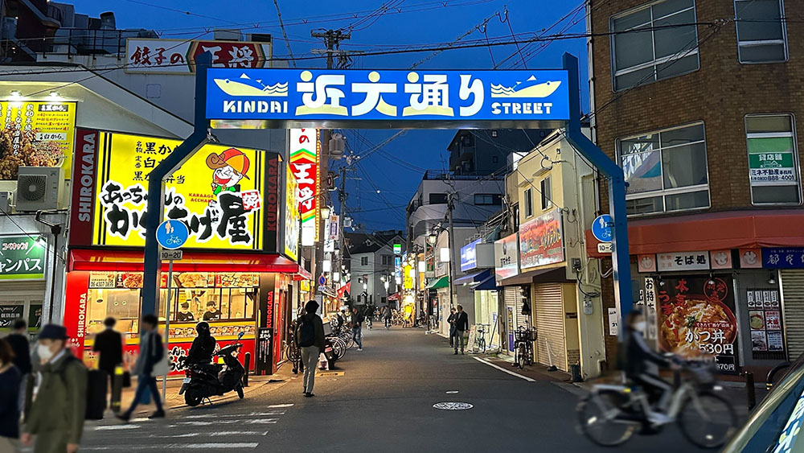
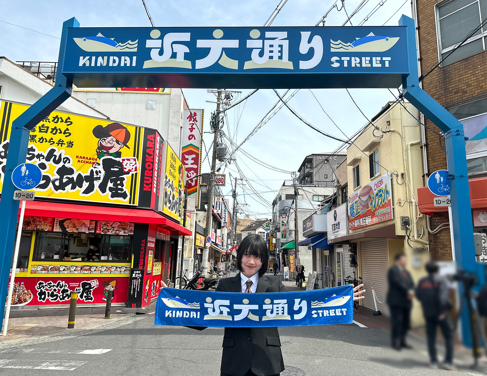

長瀬駅前商店街のアーチをデザイン
近畿大学
2024.04.02

長瀬駅前商店街入り口のアーチデザインをデザイン・クリエイティブ研究所の後藤哲也准教授が中心となり研究室学生と新しいデザインを制作し、2024年4月2日に除幕式が挙行されました。長瀬駅前商店街アーチのリニューアルは約30年ぶりとなります。
また、デザイン・クリエイティブ研究所の布施匡章教授、廣田章光教授の研究室の学生が在学生に対する駅前商店街アーチの認知やアーチデザインの心理的効果をアンケート調査し、デザイン案の制作や選択に反映されました。
後藤研究室の学生が5つのデザイン案を作成し、在学生にWebでアンケート投票してもらった結果、得票数の最も多かった案が今回採用されたデザインとなります。


藤井いちのさん（文芸学部文化デザイン学科４年）のコメント
「近大生が看板を見て『きょうも頑張ろう』と思ってもらえたら嬉しい。近大生以外の人も商店街に来て、看板も見てほしいです。」